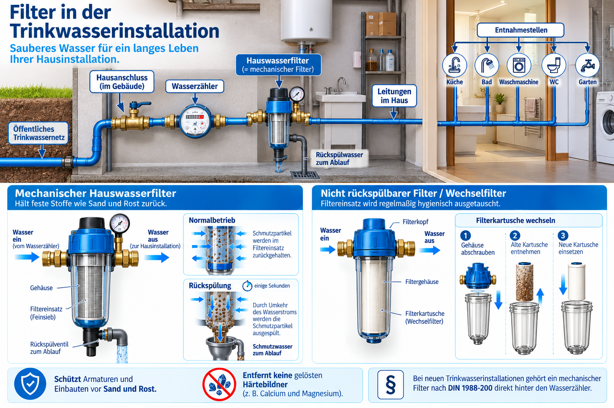
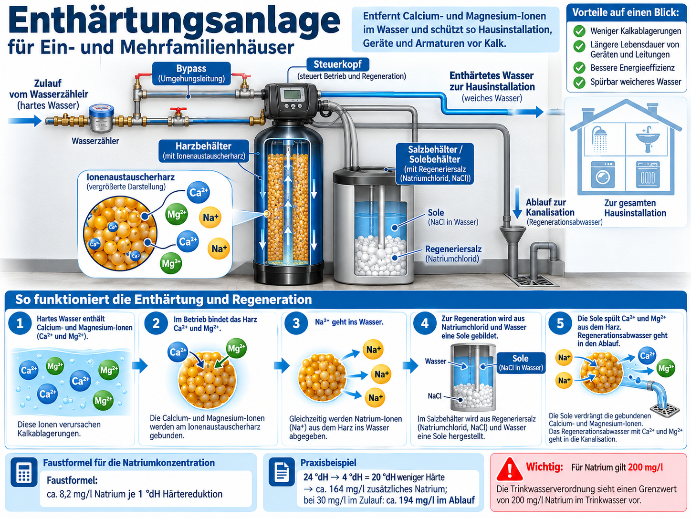

Bearbeite den Wegweiser in der Reihenfolge der Timeline. Klicke auf die Pfeile und bearbeite die Lernsequenzen. Du arbeitest mit Wissensboxen, Lückentexten, freien Aufgaben, Zuordnungen und Bildaufgaben. Am Ende sicherst du deine Lernergebnisse.
Dein Auftrag: Lies die Wissensbox. Ergänze die vier Behandlungsziele und begründe mit einem eigenen Beispiel, warum Wasser behandelt wird.
Wenn du fertig bist: „Phase abgeschlossen“ markieren und oben die nächste Phase wählen oder zum Wegweiser zurückkehren.
Wissensbox
Trinkwasserbehandlung verfolgt mehrere Ziele: Partikel sollen entfernt, technische Probleme wie Korrosion oder Steinablagerungen vermindert und die geforderte Wasserqualität eingehalten werden. Ob eine Behandlung notwendig ist, hängt vom Rohwasser und vom Versorgungsziel ab.
Lückentext
Ergänze die vier typischen Ziele:
Wortauswahl (jeden Begriff einmal einsetzen):KorrosionEnthärtungSchwebstoffenSteinablagerungen
Entfernung von · Hemmung von · Hemmung von ·
Verständnisfrage
Welche Aussage ist fachlich richtig?
Freie Aufgabe
Formuliere in 2–3 Sätzen: Warum kann eine Trinkwasserbehandlung aus technischen Gründen sinnvoll sein?
Phase 2 · 5 Minuten
Anforderungen an Trinkwasser
Dein Auftrag: Erarbeite die Anforderungen an Trinkwasser. Löse die Aufgaben und vergleiche die Antworten mit den Informationen aus der Wissensbox.
Wenn du fertig bist: „Phase abgeschlossen“ markieren und oben die nächste Phase wählen oder zum Wegweiser zurückkehren.
Wissensbox
Im Unterricht werden häufig vier leicht merkbare Anforderungen genannt: klar, keimarm bzw. hygienisch unauffällig, geruchs- und geschmacklich unauffällig sowie kühl. Fachlich entscheidend ist aber: Die Qualität muss anhand mehrerer Kriterien beurteilt werden – nicht nur am Aussehen. Das Trinkwasser muss die Vorgaben der Trinkwasserverordnung erfüllen.
Zuordnungsaufgabe
Ordne zu: Gehört der Begriff eher zur direkten Trinkwasseranforderung oder eher zu einem technischen Betriebsziel?
Knackpunkt
Welche Aussage ist die beste?
Zusammenfassung
Notiere vier Anforderungen an Trinkwasser in Stichworten und ergänze je ein kurzes Beispiel, wie man sie beurteilen könnte.
Phase 3 · 7 Minuten
Wasserqualität
Dein Auftrag: Unterscheide physikalische, chemische und biologische Merkmale. Bearbeite die Zuordnungen und notiere je ein Beispiel.
Wenn du fertig bist: „Phase abgeschlossen“ markieren und oben die nächste Phase wählen oder zum Wegweiser zurückkehren.
Wissensbox
Zur Beurteilung der Wasserqualität betrachtet man physikalische, chemische und biologische bzw. mikrobiologische Parameter. Beispiele sind Trübung und Temperatur, pH-Wert und Nitrat oder Bakterien und Viren.
Parameter-Detektiv
Ordne die Beispiele zu.
Zuordnung am Bild
Klicke auf die Prüfstationen und lies die Hinweise. Anschließend ordnest du jedem Symbol die passende Parametergruppe zu.
Station 1
Physikalische Parameter beschreiben z. B. Temperatur, Trübung, Farbe, Geruch oder Geschmack.
Station 2
Chemische Parameter umfassen z. B. pH-Wert, Härte, Sauerstoff, Nitrat- oder Phosphatgehalte sowie Schwermetalle.
Station 3
Biologische Parameter betreffen Organismen wie Bakterien, Viren, Parasiten oder Algen.
Freie Übung
Erstelle eine Mini-Merkliste mit je zwei Beispielen für physikalische, chemische und biologische Parameter.
Phase 4 · 11 Minuten
Verfahren der Trinkwasserbehandlung
Dein Auftrag: Wähle einen Themen-Button. Erkunde besonders die Filtration und vergleiche weitere Verfahren. Die Umkehrosmose ist ein separater freiwilliger Exkurs.
Bearbeite die Aufgaben in deinem eigenen Tempo und markiere anschließend „Phase abgeschlossen“.
Überblick
Welches Verfahren hilft, hängt von Wasserqualität, Verunreinigung und Behandlungsziel ab. Nicht jedes Trinkwasser benötigt alle Verfahren. Ionenaustausch zur Enthärtung wird hier praxisnah behandelt: Funktion, Regeneration und Natriumberechnung.
Sprache im Kurs:
Filtration in der Trinkwasserinstallation
🔎 Interaktives Schaubild: Mit der Maus über die Punkte fahren oder antippen, um eine Erklärung zu öffnen.

Bilddatei „Filter.png“ ist im veröffentlichten GitHub-Repository noch nicht erreichbar. Sobald sie im Hauptverzeichnis oder im Ordner lernlabor liegt, wird sie hier angezeigt.
Die Zahlen markieren wichtige Bestandteile. Die Erklärungen entsprechen den Wissensboxen dieser Lerneinheit.
Ein mechanischer Hauswasserfilter hält feste Partikel wie Sand und Rost zurück und schützt die Installation. Gelöste Härtebildner werden dadurch nicht entfernt.
In Wohnanlagen besonders wichtig: rückspülbare und nicht rückspülbare Filter unterscheiden sich darin, wie das Filterelement gereinigt bzw. ersetzt wird.
🔄 Rückspülbarer Filter
Funktion: Zum Reinigen wird Wasser in umgekehrter bzw. konstruktiv vorgesehener Spülrichtung durch den Filter geführt; angesammelte Partikel gelangen zum Abwasseranschluss.
Praxis: Zentraler Hausanschluss einer Wohnanlage. Vorteil: regelmäßige Reinigung ohne routinemäßigen Wechsel des Filtereinsatzes. Rückspülung nach Herstellerangaben, hygienischer Abwasseranschluss erforderlich.
🧩 Nicht rückspülbarer Filter (Wechselfilter)
Funktion: Der Filtereinsatz fängt Feststoffe auf und wird bei Wartung durch einen geeigneten neuen Einsatz ersetzt – er wird nicht rückgespült.
Praxis: Hausanschluss mit austauschbarer Filterkerze. Wichtig: regelmäßiger hygienischer Filterwechsel gemäß Herstellerangaben; verschmutzte Einsätze nicht einfach weiterbetreiben.
Vorschrift – kurz:
Nach DIN 1988-200 gehört bei neuen Trinkwasserinstallationen ein mechanischer Filter direkt hinter den Wasserzähler – auch bei Kunststoffleitungen. Er schützt vor Sand, Rost und Schäden an Armaturen. Für ältere Anlagen besteht grundsätzlich keine pauschale Nachrüstpflicht; bei Sanierungen kann eine Nachrüstung sinnvoll sein. Filter regelmäßig warten.
Leitungswasser mit Partikeln→Hauswasserfilter→partikelärmeres Wasser zur Installation
Multiple Choice: Welcher Filter ist gemeint?
Ein Hausmeister öffnet zur regelmäßigen Reinigung die Rückspülung; Schmutzwasser wird abgeleitet.
Multiple Choice: Was ist bei einem Wechselfilter zu tun?
Schwerpunkt Wohngebäude · Filtration und Enthärtung
Wasserenthärtung: weniger Härte, mehr Natrium
In einer Wohnanlage entstehen starke Kalkablagerungen an Armaturen und Warmwasserbereitern. Eine mögliche technische Maßnahme ist die Enthärtung mit Natrium-Ionenaustausch. Sie reduziert Calcium- und Magnesiumionen, die die Wasserhärte verursachen – nicht aber Sand oder Rost.
🔎 Interaktives Schaubild: Mit der Maus über die Punkte fahren oder antippen, um eine Erklärung zu öffnen.

Bilddatei „Enthärtung.png“ ist im veröffentlichten GitHub-Repository noch nicht erreichbar. Sobald sie im Hauptverzeichnis oder im Ordner lernlabor liegt, wird sie hier angezeigt.
Die Zahlen markieren wichtige Bestandteile. Die Erklärungen entsprechen den Wissensboxen dieser Lerneinheit.
Was passiert?
Hartes Wasser fließt durch Kunstharzkügelchen. Calcium (Ca²⁺) und Magnesium (Mg²⁺) bleiben am Harz hängen. Stattdessen gelangen Natriumionen (Na⁺) ins Wasser. Das Ergebnis: weniger Kalkbildung. Die Enthärtung ist kein mechanischer Schmutzfilter.
Vereinfachte, schematische Animation – nicht maßstabsgetreu. Das Harz tauscht zwei einwertige Natriumionen gegen ein zweiwertiges Calcium- oder Magnesiumion aus.
Praxisfrage: Warum hilft ein Hauswasser-Partikelfilter nicht gegen gelöste Härtebildner?
Was macht das Regeneriersalz NaCl?
1 · Im Betrieb
Das Harz nimmt Ca²⁺/Mg²⁺ auf und gibt Na⁺ an das Wasser ab. Das Harz erschöpft sich nach und nach.
2 · Salzbehälter
Regeneriersalz (Natriumchlorid, NaCl) wird mit Wasser zur Salzlösung, der Sole.
3 · Regeneration
Konzentrierte Sole durchströmt das Harz. Die vielen Na⁺ verdrängen Ca²⁺/Mg²⁺ vom Harz. Es wird anschließend gespült.
4 · Abwasser
Die verdrängten Härtebildner und überschüssige Sole gelangen ins Regenerationsabwasser – nicht in den normalen Trinkwasserablauf.
Härtebildner am Harz→NaCl-Sole→Harz wieder in Na-Form→Spülen / Abwasser
Wichtig: Das Salz wird vor allem zur Regeneration gebraucht. Man gibt nicht einfach Kochsalz in das Trinkwasser. Die Natriumzunahme im enthärteten Wasser entsteht durch den Ionenaustausch am Harz.
Vereinfachte Reaktion im Betrieb: 2 R–Na + Ca²⁺ → R₂–Ca + 2 Na⁺ (entsprechend für Mg²⁺).
Praxisbeispiel: Kunde möchte von 24 °dH auf 4 °dH
Bei der Natrium-Ionenaustauscher-Enthärtung steigt der Natriumgehalt rechnerisch um ungefähr 8,2 mg/l pro 1 °dH Härtereduktion.
Unbedingt den Natriumwert aus der Wasseranalyse eintragen! Die Wasserhärte allein reicht nicht aus. Das bereits vorhandene Natrium und das durch die Enthärtung zusätzlich eingetragene Natrium werden zusammengezählt. Die 30 mg/l sind nur ein fiktiver Übungswert.
24 − 4 = 20 °dH Härtereduktion · 20 × 8,2 = ca. 164 mg/l zusätzliches Natrium · 30 + 164 = ca. 194 mg/l Natrium im Ablauf.
Natrium-Parameterwert: 200 mg/l. Die 164 mg/l sind zusätzlich zum bereits vorhandenen Natrium. Ob die Maßnahme zulässig und sinnvoll ist, hängt außerdem von Wasseranalyse, Installation und fachgerechter Planung ab.
Schülerauftrag: Ändere den Ausgangsnatriumwert auf 45 mg/l. Was passiert mit dem Ergebnis? Begründe deine Empfehlung an den Kunden.
Wasserhärte richtig einordnen
Weich
Weniger als 8,4 °dH
Mittel
8,4 bis 14 °dH
Hart
Mehr als 14 °dH
Was ist erlaubt?
Diese Härtebereiche dienen der Einordnung; die Trinkwasserverordnung legt keinen allgemeinen Höchstwert für die Wasserhärte fest. Auch 24 °dH sind daher nicht allein wegen der Härte verboten. Für Natrium beträgt der Parameterwert dagegen 200 mg/l.
Kundenbeispiel: Von 24 auf 4 °dH bedeutet 20 °dH weniger Härte und rechnerisch etwa 164 mg/l mehr Natrium. Das bereits vorhandene Natrium aus der Wasseranalyse zählt mit! Maximal wären damit rein rechnerisch etwa 36 mg/l Ausgangsnatrium möglich, um 200 mg/l nicht zu überschreiten.
Für Wohnanlagen gilt: Enthärtung ist keine Pflicht allein wegen hartem Wasser. Eine Anlage muss zu Bedarf, Werkstoffen, Hygiene und Wartungsorganisation passen. Eine möglichst niedrige Zielhärte ist nicht automatisch die sinnvollste Einstellung.
Bei der natürlichen Osmose strömt Wasser durch eine semipermeable Membran vereinfacht zur Seite mit der höheren gelösten Stoffkonzentration. Die Umkehrosmose nutzt ausreichend hohen Druck, um Wasser in Gegenrichtung durch die Membran zu bewegen.
Das durchgetretene Wasser heißt Permeat. Der abgetrennte, konzentrierte Teil heißt Konzentrat.
Zweiter Abgang an der Membran: Konzentrat → vorgesehener Abwasseranschluss. Dies ist eine textliche Prozessübersicht, keine Animation.
1. Vorfilter zum Partikelschutz · 2. gegebenenfalls Aktivkohle und Druckerhöhung · 3. Membran · 4. getrennte Wege für Permeat und Konzentrat · 5. gegebenenfalls Tank, Nachbehandlung und gesonderte Entnahme.
Wann ist das sinnvoll?
Für einwandfreies deutsches Leitungswasser ist eine zusätzliche Umkehrosmoseanlage im Haushalt im Regelfall nicht erforderlich. Ein spezieller Bedarf sollte sich aus der Wasseranalyse und einem konkreten Behandlungsziel ergeben.
Grenzen: Konzentrat fällt als Abwasser an; Wartung, Wasser- und Energieverbrauch sowie Hygiene müssen berücksichtigt werden. Installation und Betrieb richten sich nach den geltenden Regeln.
Wissensfrage 1
Wie wird bei der Umkehrosmose der Wassertransport technisch erreicht?
Wissensfrage 2
Ein Einfamilienhaus wird mit einwandfreiem Leitungswasser versorgt. Was ist die fachlich sinnvolle Aussage?
Kundenauftrag
Ein Kunde fragt: „Warum entstehen bei der Umkehrosmose gleichzeitig Permeat und Konzentrat, und brauche ich die Anlage überhaupt?“ Antworte in 3–4 Sätzen und nenne einen Nachteil.
Im Wohngebäude sind Hauswasserfilter und bei nachgewiesenem Bedarf Wasserenthärtung unsere Schwerpunkte. Andere Verfahren lernst du hier nur als Überblick kennen.
Andere Verfahren (nicht Schwerpunkt Hausinstallation)
Dies ist Zusatzwissen außerhalb der typischen Hausinstallation.
🌊 Sedimentation
Schwerere Partikel setzen sich bei ruhiger Strömung ab.
🫧 Fällung und Flockung
Feine oder gelöste Stoffe werden in abtrennbare Flocken überführt.
⚫ Aktivkohle / Adsorption
Bestimmte unerwünschte Stoffe lagern sich an Oberflächen an.
☀️ UV-Desinfektion
UV-Licht inaktiviert Mikroorganismen bei geeigneter Auslegung und Wasserqualität.
💨 Belüftung und Oxidation
Kann Gase austreiben oder Stoffe wie gelöstes Eisen für eine nachfolgende Abtrennung verändern.
🔥 Destillation (Sonderverfahren)
Wasser wird verdampft und wieder kondensiert; hoher Energiebedarf.
🌫️ Nebel- und Luftfeuchtegewinnung (Exoten)
Gewinnt Wasser aus feuchter Luft; es muss für Trinkwasserzwecke gesondert hygienisch beurteilt und gegebenenfalls behandelt werden.
Wo begegnet uns das?
Flockung/Absetzen: Wasserwerk, Trübstoffe entfernen. Belüftung/Oxidation: Rohwasseraufbereitung, z. B. Eisen für eine Filtration vorbereiten. Destillation: Labor, Wasser für spezielle Zwecke. Nebelnetze: Wassergewinnung in bestimmten trockenen Regionen.
Ein kann bestimmte organische Stoffe adsorbieren. Beim werden gelöste Ionen gegen andere Ionen ausgetauscht. Die hält viele gelöste Salze durch eine Membran zurück.
Zuordnung auf dem Bild
Im vereinfachten Schema einer Aufbereitungskette sind vier Stufen markiert. Ordne den Stufen den passenden Aufbereitungsschritt zu.
Dies ist ein vereinfachtes Planungsschema. Die Reihenfolge muss anhand der Rohwasserqualität begründet werden; es gibt nicht immer eine eindeutige Musterlösung.
Rechenwerkstatt: Dosierung (Zusatzaufgabe)
Ein fiktives Laborbeispiel verwendet 3 mg/l Wirkstoff bei einem Durchfluss von 12 m³/h. Berechne die Wirkstoffmasse in g/h. Hinweis: m [g/h] = Q [m³/h] × c [mg/l].
Reines Rechenbeispiel, keine Dosierungsvorgabe für eine reale Anlage.
Arbeitsnotiz
Notiere zwei Verfahren, die du bereits sicher unterscheiden kannst, und erkläre den Unterschied kurz.
Phase 5 · 6 Minuten
Desinfektion
Dein Auftrag: Vergleiche Chlor, UV und Ozon. Beantworte die Fragen und halte die wichtigsten Unterschiede in eigenen Worten fest.
Wenn du fertig bist: „Phase abgeschlossen“ markieren und oben die nächste Phase wählen oder zum Wegweiser zurückkehren.
Wissensbox
Wichtige Desinfektionsverfahren im Trinkwasserbereich sind Chlorung, UV-Bestrahlung und Ozonung. Sie unterscheiden sich in Wirkprinzip, Restwirkung und möglichen Grenzen.
Wichtig: In realen Anlagen dürfen nur zugelassene Aufbereitungsstoffe und Verfahren nach den jeweils geltenden Vorgaben eingesetzt werden.
Vergleichen und zuordnen
Ordne das typische Merkmal zu.
Prüffrage
Welche Aussage trifft zu?
Freie Aufgabe
Vergleiche Chlorung, UV und Ozon in drei Stichpunkten: Wirkungsweise, Vorteil, Grenze.
Phase 6 · 6 Minuten
Beispiele aus der Praxis
Dein Auftrag: Lies die Praxisfälle. Wähle jeweils eine begründete Maßnahme und dokumentiere deine Entscheidung.
Wenn du fertig bist: „Phase abgeschlossen“ markieren und oben die nächste Phase wählen oder zum Wegweiser zurückkehren.
Wissensbox
Für dasselbe Behandlungsziel gibt es oft mehrere denkbare Lösungswege. Entscheidend ist, die Auswahl fachlich zu begründen und Grenzen zu erkennen.
Fall A
Das Rohwasser ist stark getrübt und enthält viele Schwebstoffe. Welche Maßnahme ist naheliegend?
Fall B
Im Versorgungsgebiet stören starke Kalkablagerungen. Welcher Ansatz ist am ehesten passend?
Fall C
Bei einer Untersuchung gibt es einen mikrobiologischen Auffälligkeitsbefund. Was steht im Zentrum?
Mini-Fallanalyse
Wähle einen Fall aus und begründe in 3–4 Sätzen, welche Information dir für eine sichere Entscheidung noch fehlen würde.
Phase 7 · 5 Minuten
Lernergebnisse sichern
Dein Auftrag: Fasse die wichtigsten Erkenntnisse in eigenen Worten zusammen. Markiere die Phase als abgeschlossen und lade dein Lernprotokoll herunter.
Wenn du fertig bist: „Phase abgeschlossen“ markieren und oben die nächste Phase wählen oder zum Wegweiser zurückkehren.
Arbeitsauftrag
Jetzt werden die wichtigsten Ergebnisse festgehalten. Ziel ist eine knappe, fachlich saubere Sicherung – keine ausführliche Präsentation.
Merksätze vervollständigen
Trinkwasserqualität wird über beurteilt. Nicht jedes Rohwasser braucht dieselbe . Desinfektion ist nur ein der gesamten Aufbereitung.
3–2–1-Sicherung
Notiere 3 Erkenntnisse, 2 wichtige Fachbegriffe und 1 offene Frage.
Zusammenfassung für dein Heft / digitales Heft
Formuliere einen kurzen Gesamtüberblick: Was sind Ziele, wichtige Anforderungen und typische Verfahren der Trinkwasserbehandlung?
Ergebnisse sichern
Du kannst dein Lernprotokoll als Textdatei herunterladen oder die Seite als PDF drucken. Alle Texteingaben bleiben zusätzlich auf diesem Gerät gespeichert.